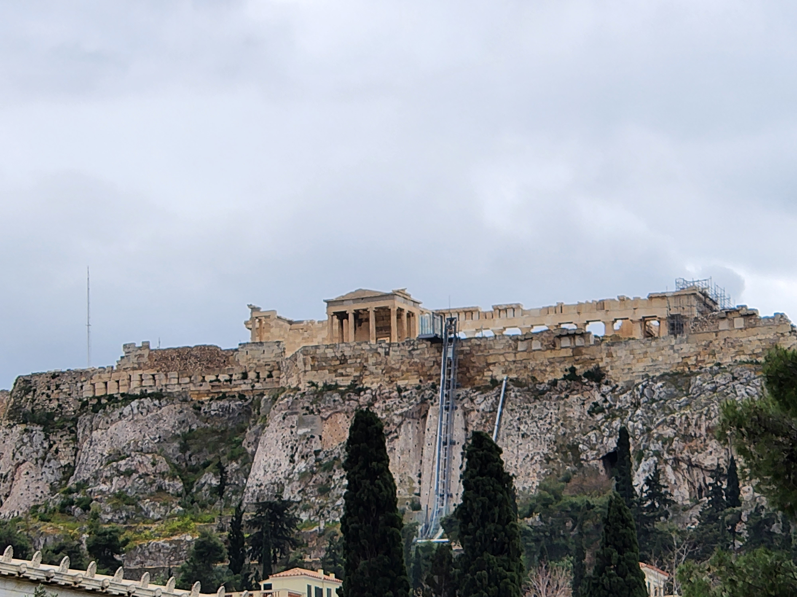
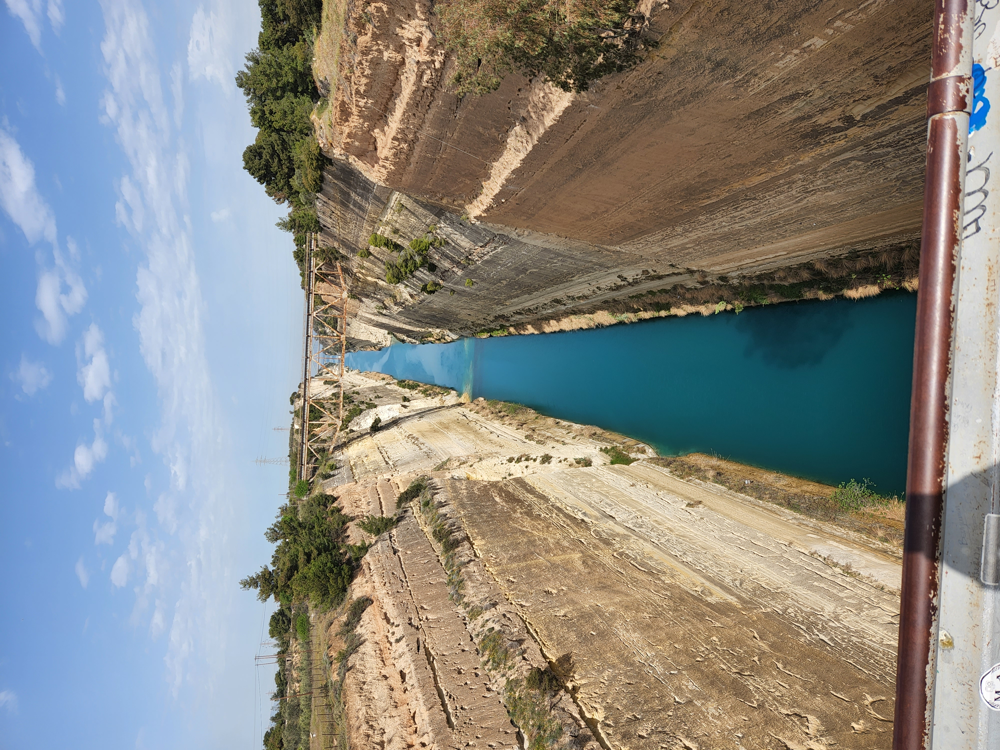
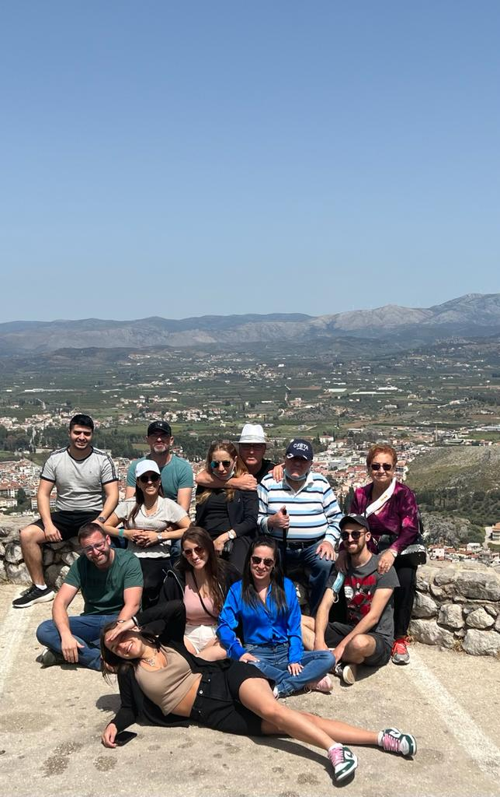
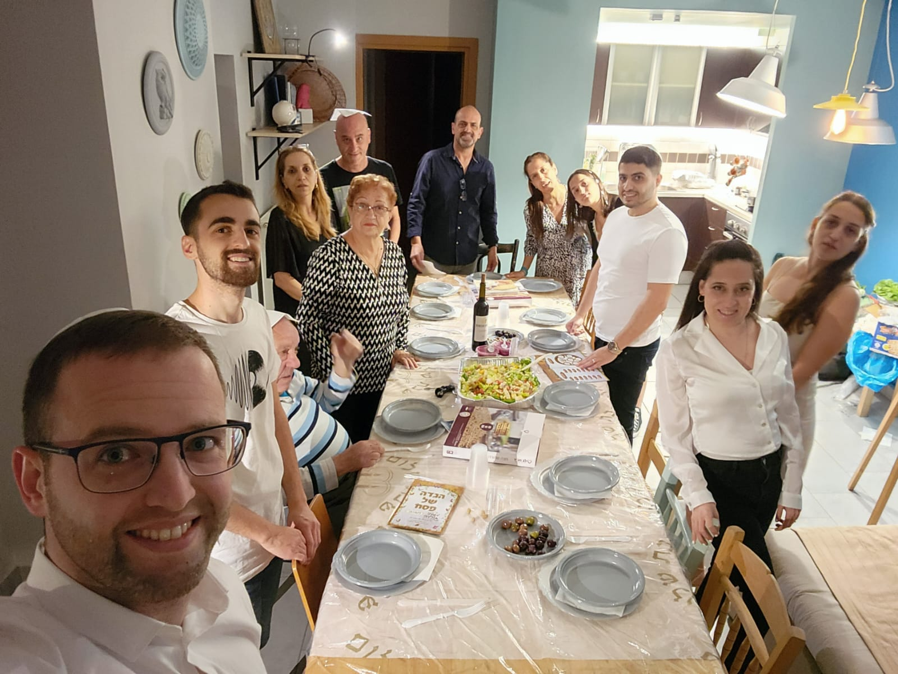
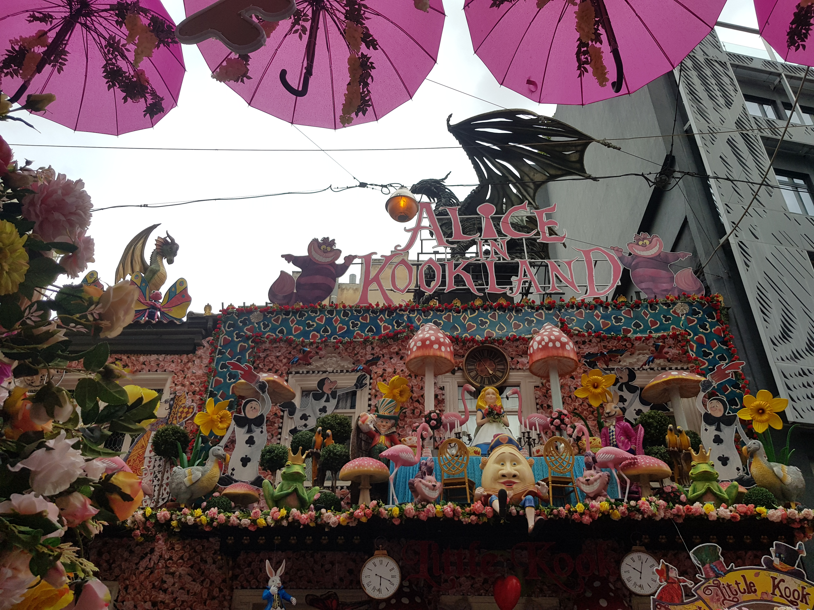
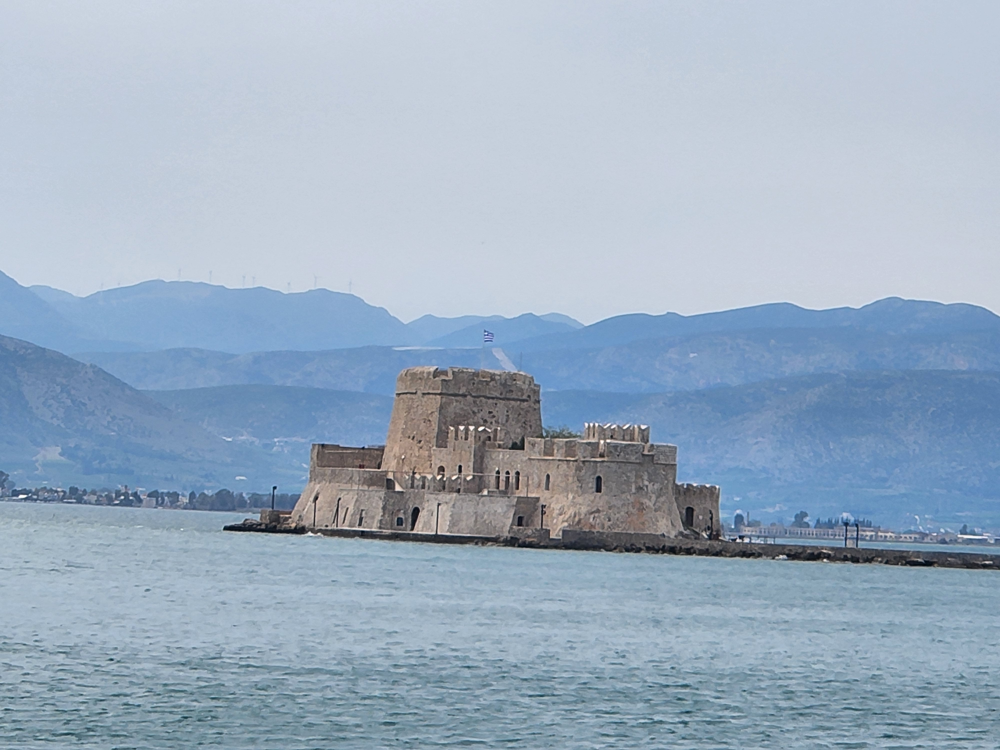

Athens
When I was a young boy (no, really), I read Percy Jackson. That's the main reason why I'm still a nerd. But, it made me love greek mythology and ever since I've wanted to visit Athens. Now, after COVID was over, my family and I went there to spend our passover holiday. It was absolutely wonderful. The Acropolis is an amazing piece of history and the view from the top on all over the city is awesome. Unfortunately, It was my grandparents last trip as they can't walk anymore but it was still a great trip.
Picturesque Moments






Favourite attractions:
-
Acropoilis
For almost 2500 years, stand this bulding atop the hill in the center of Athens. There are a lot of ancient ruins here and you can sit in Dionysus' theater and pray to Athena in the Parthenon. The view from up here is absolutely worth the ascension.
-
Peloponnese
I bet youv'e never heard this name before but Peloponnese is a peninsula not so far from Athens. It features some of the best places in greece such as: Gulf of Corinth, the city of Loutraki and the Old Isthmus Bridge.
-
The zoo and the Botanical Gardens
In the middle of the city, there are the national gardens that features the Roman Ruins, Zappeion hall and the zoo. If you love animals, it is the place for you. Just imagine turtles walking around the ancient city, it's magical I promise.
-
Ermou Street
If you like shopping, you'll love this street! This place has all the stores you want, with the best prices. In the end of the street, you'll end up in Monastriaki square that has great food stands and an entrance to the flea market.
Travel Tips:
- The Greek Language: The greek Language is very interesting and knowing how to read some letters or say basic phrases can be very helpful. For example: "Kalimera" for good morning, and "Kalispera" for good night.
- Souvlaki:The only proof that there are gods, it's the Souvlaki. The tender meat, the sumac onion, the parsley lying on a perfect bread. You have to try it!
- Taverns: If there's something Greece is famous for, other than financial crisis, is the taverns! Great vibes, dancing waiters and a lot of Ouzo and Raki.
- Get out of the city: Even though the city is great and there's so much to see, you have to get out of the city! Take a bus or rent a car and drive to Pireaus, the port of Athens or even go to Corinth canal for an astonishing view over the channel only an hour away!
- Beware of scams: Even though the greek are known for their hospitality and the great vibes, the streets are full of tourist scams and not so good restaurants on the main roads. You need to pay attention to who you are talking to and watch for pickpocketers!